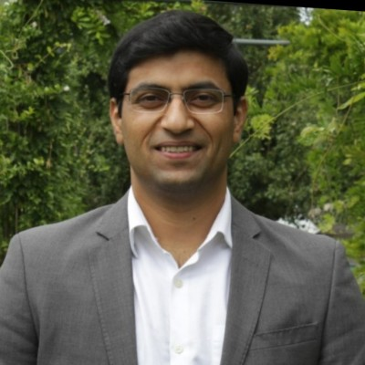

About
Welcome! I am a post-doctoral researcher at GREYC lab, Université de Caen, France. I am part of HULTECH team headed by Prof. Marc Spaniol. My broad research interests are Natural Language Processing (NLP), Web Science and Big Data Analytics. Currently, I am working on the semantic analysis of large-scale noisy text collected over decades.
*Yes, my full name is "Govind" officially.
Broad Research Interests: NLP, Web Science, Big Data Analytics
Current/Specific Interests: Entity-level Event Impact Analytics, Fine-grained Document Classification, Deep Learning for Noisy Text
Recent Activities and News
-

WWSSS 2020
Member of local organizing team and publicity chair for the WSTNet Web Science Summer School, Caen, France, June 29 - July 3, 2020
Education and Professional Experience
-
Université de Caen Normandie (Unicaen), France
Post Doctoral Researcher, GREYC Laboratory, Jan 2019 onwards
Project: ASTURIAS (Semantic Analysis of Large-scale Noisy Text)
PI: Prof. Marc Spaniol - Université de Caen Normandie (Unicaen), France
PhD, Computer Science, Nov 2015 – Dec 2018
Thesis : Entity-level Event Impact Analytics
Advisor: Prof. Marc Spaniol - Indian Institute of Technology Patna (IIT), India
Master of Technology, Mathematics and Computing, July 2012-May 2014, Chairman’s Gold Medalist
Thesis : Multiobjective Optimization and Unsupervised Lexical Acquisition for Information Extraction
Advisors: Asif Ekbal and Chris Biemann - Technische Universität Darmstadt (TU), Germany
Master of Technology, Mathematics and Computing, Semester Exchange, September 2013-March 2014 - Guru Jambheshwar University of Science and Technology Hisar (GJUST), India
Bachelor of Technology, Computer Science and Engineering, July 2008-May 2012
Publications
- Amit Kumar, Govind, Céline Alec, Marc Spaniol, Blogger or President? Exploitation of Patterns in Entity Type Graphs for Representative Entity Type Classification, Proceedings of the 12th ACM Web Science Conference (WebSci 2020) 2020, Southampton, UK. To Appear BibTeX
- Govind, Amit Kumar, Céline Alec, Marc Spaniol, CALVADOS: A Tool for the Semantic Analysis and Digestion of Web Contents, Proceedings of the 16th Extended Semantic Web Conference (ESWC 2019) 2019, Portorož, Slovenia. Online Interface BibTeX
- Govind, Céline Alec, Marc Spaniol, Fine-grained Web Content Classification via Entity-level Analytics: The Case of Semantic Fingerprinting, In “Bests of ICWE 2018”, Journal of Web Engineering (JWE), 2019. BibTeX
- Govind, Entity-level Event Impact Analytics, Doctoral Dissertation, Université de Caen Normandie, Dec 2018, Caen, France. Dissertation (With intro in French) BibTeX
- Govind, Event Impact Analytics. WSTNET Web Science Summer School (WWSSS 2018) 2018, Hannover, Germany. Poster
- Govind, Céline Alec, Marc Spaniol, Semantic Fingerprinting: A Novel Method for Entity-level Content Classification. Proceedings of the 18th International Conference on Web Engineering (ICWE 2018) 2018, Cáceres, Spain. BibTeX
- Govind, Céline Alec, Marc Spaniol, ELEVATE-live: Assessment and Visualization of Online News Virality via Entity-level Analytics. Proceedings of the 18th International Conference on Web Engineering (ICWE 2018) 2018, Cáceres, Spain. Online Interface BibTeX
- Govind, Marc Spaniol, ELEVATE: A Framework for Entity-level Event Diffusion Prediction into Foreign Language Communities. Proceedings of the 9th International ACM Web Science Conference (WebSci’17) 2017, Troy, NY. BibTeX
- Govind, Asif Ekbal and Chris Biemann, Multiobjective Optimization and Unsupervised Lexical Acquisition for Named Entity Recognition and Classification. Proceedings of the 11th International Conference on Natural Language Processing (ICON) 2014, Goa, India. BibTeX
Awards and Recognitions
- Scholarship Grant for the WSTNet Web Science Summer School 2018 at L3S, Hannover, Germany.
- ACM SIGWEB Student Travel Award for 9th International ACM Web Science Conference 2017, NY, USA.
- Chairman’s Gold Medal for 1st rank among all postgraduate students at IIT Patna, India.
- DAAD fellowship for semester exchange at Technische Universität Darmstadt, Germany (DAAD-IIT Master sandwich program 2013).
- Postgraduate scholarship for master studies at IIT Patna (GATE 2012).
- Undergraduate scholarship by MHRD, Govt. of India for outstanding performance in higher secondary (Scheme of Scholarship for College and University Students 2008).
Programming Frameworks
- Programming languages: Java, Python
- Machine learning/NLP libraries: Scikit-learn, Keras, Tensorflow, CoreNLP
- Database systems: Apache HBase, PostgreSQL
- Large-scale data processing: Apache Spark, Hadoop